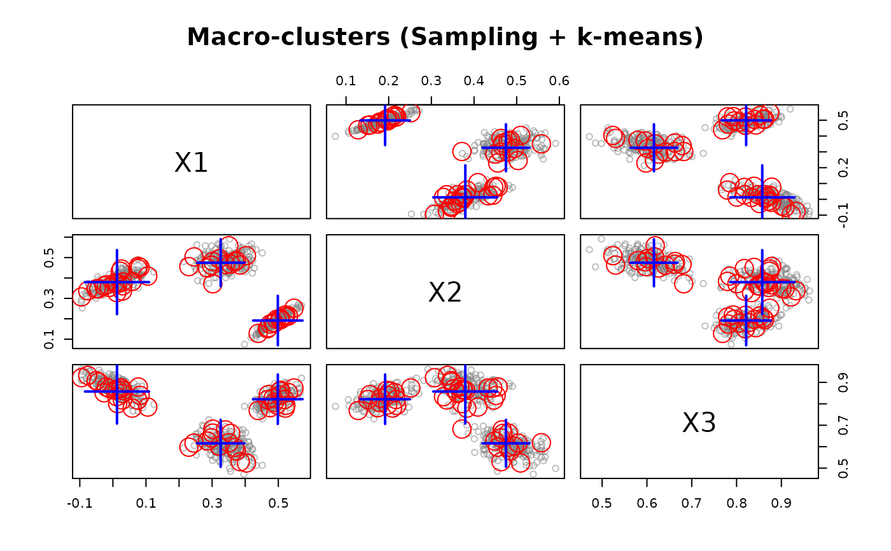

Use an *offline macro clustering algorithm to recluster micro-clusters into a final clusters.
Usage
recluster(macro, micro, type = "auto", ...)
# S3 method for class 'DSC_Macro'
recluster(macro, micro, type = "auto", ...)Details
Takes centers and weights of the micro-clusters and applies the macro clustering algorithm.
See DSC_TwoStage for a convenient combination of micro and macro clustering.
Examples
set.seed(0)
### create a data stream and a micro-clustering
stream <- DSD_Gaussians(k = 3, d = 3)
### sample can be seen as a simple online clusterer where the sample points
### are the micro clusters.
sample <- DSC_Sample(k = 50)
update(sample, stream, 500)
sample
#> Reservoir sampling
#> Class: DSC_Sample, DSC_Micro, DSC_R, DSC
#> Number of micro-clusters: 50
### recluster using k-means
kmeans <- DSC_Kmeans(k = 3)
recluster(kmeans, sample)
### plot clustering
plot(kmeans, stream, type = "both", main = "Macro-clusters (Sampling + k-means)")
